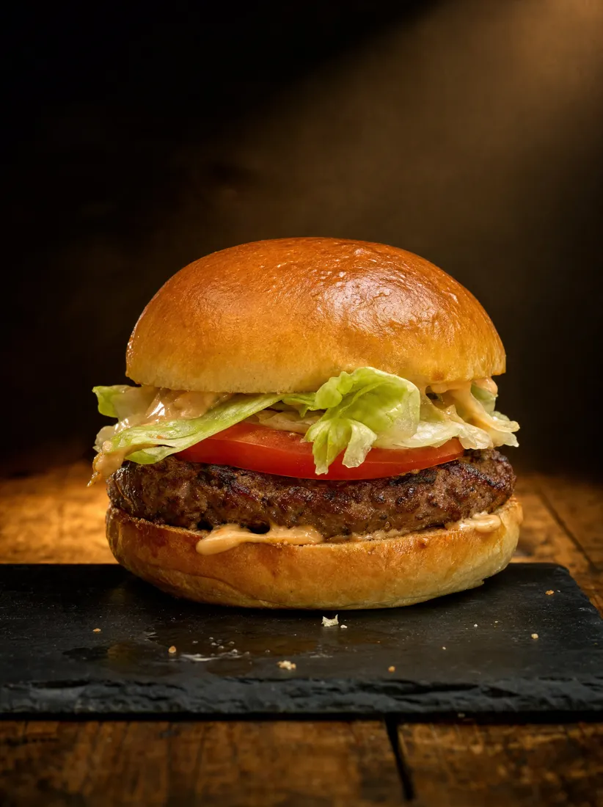
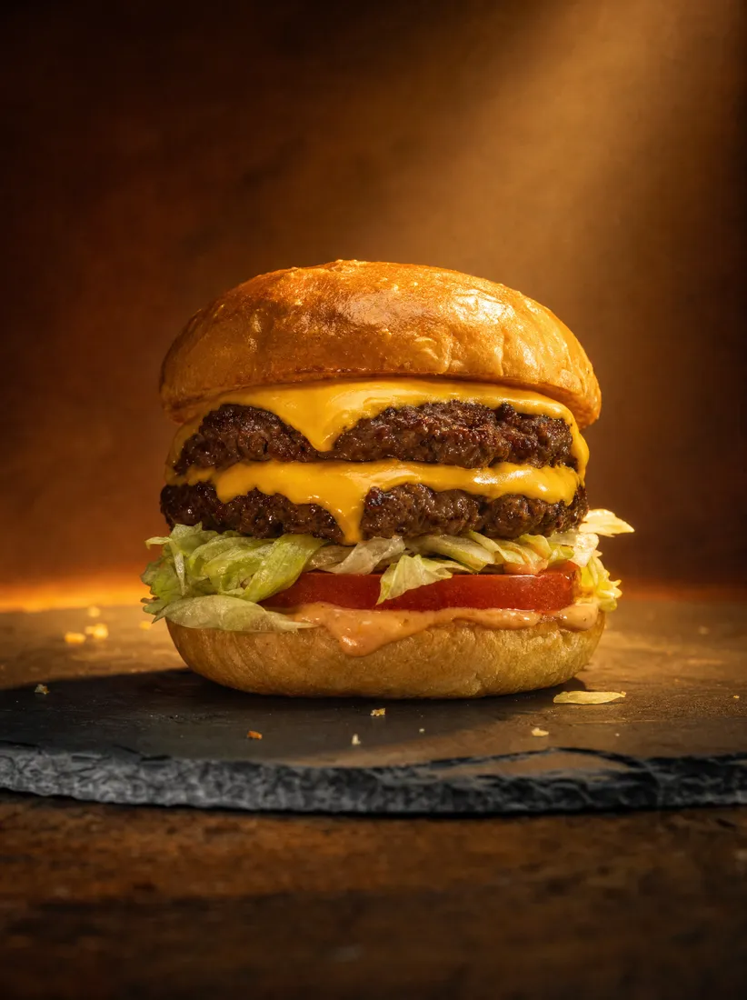

Hamburger
One patty, hand-leafed lettuce, tomato, spread.
Baldwin Park · 1948
The first drive-thru in California.
01 / 13
Scroll ↓
Their own words. Nothing here is secret, and nothing here is ordered.

Harry Snyder built the speaker box in his garage so you would not have to leave the car.
A hundred square feet. Six lines on the menu. Zero freezers. One arrow, since 1954.

Francisquito and Garvey.

Built at night, in his garage.

He picked the produce himself.

1954. It points to pride.
We all work under the same arrow.
Unsolicited concept redesign, not affiliated with or endorsed by In-N-Out Burgers. Every figure, quotation and menu description is taken verbatim from in-n-out.com. Concept and build: Dondi Santeme, TheWebDesigner.